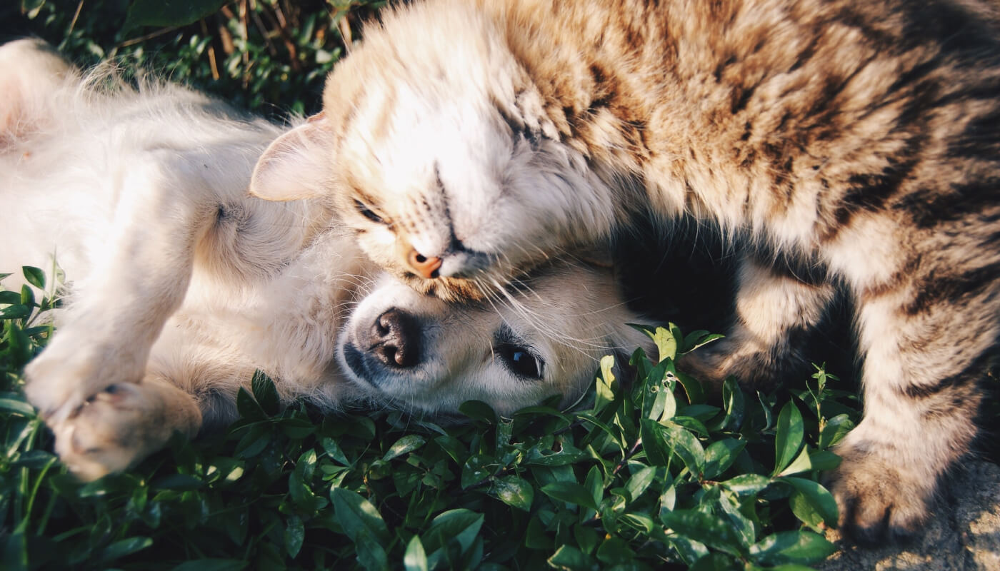

CENTRO VETERINÁRIO
Tudo para manter a saúde do seu pet em dia
Vacinas, consultas e exames com qualidade e carinho.
Agendar agora
🚑 Emergência
Em caso de emergência, leve o seu pet imediatamente para o Hospital Veterinário Seres 24h mais próximo de você.
Quando levar o pet ao veterinário?
O apoio do veterinário é essencial para qualidade de vida do seu melhor amigo. Ele atua em diversas situações, como:
- ✓ Cuidados preventivos
- ✓ Diagnóstico precoce
- ✓ Vacinas e medicamentos
- ✓ Consultas de rotina
- ✓ Orientações de alimentação e higiene


Lembrete: agendar as vacinas do pet
Fique por dentro de toda a proteção que o seu gato ou cachorro precisa.
Vacinas obrigatórias para cães e gatos
- • Múltipla
- • Antirrábica
Outras vacinas para cães
- • Gripe Canina
- • Giardíase